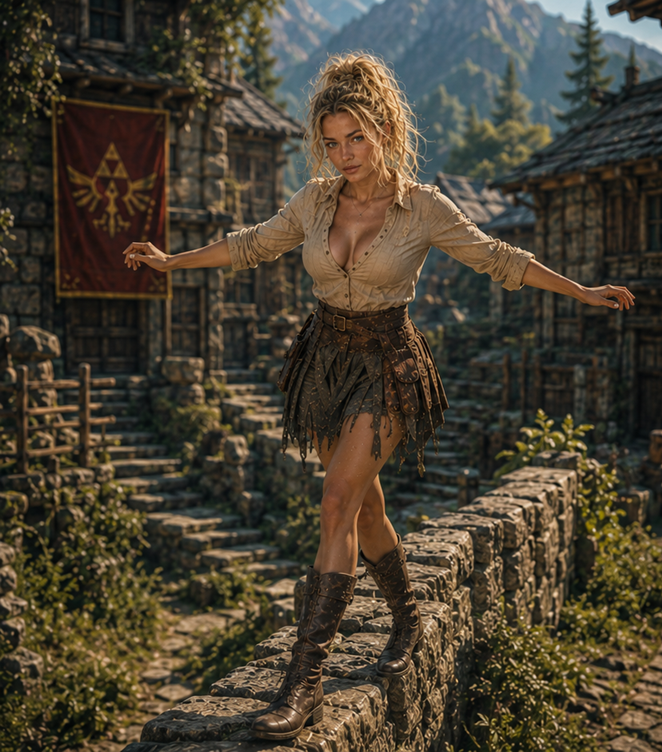
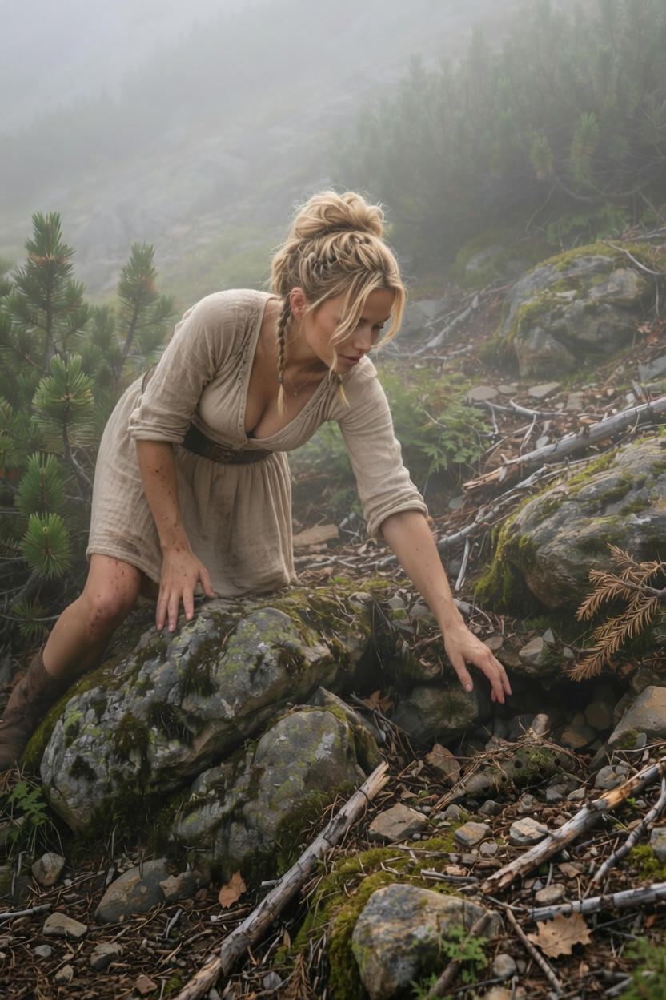

📖 My Diary
📅 Day 6 — The Gift of Listening
Der Morgen beginnt früh. Maron zeigt mir, wie man zuhört — nicht nur den Gästen, sondern dem Teig selbst.

📅 Day 5 — The Ocarina
Maron schenkt mir eine Ocarina! Sie liegt schwer in meiner Hand, aber wenn der Wind weht, spielt sie von selbst.

📅 Day 4 — Listening in the Bakery
Der Duft von frischem Brot füllt den Raum. Ich lausche dem Knistern des Feuers.

📅 Day 3 — The Forest Listens
Der Wald spricht leise. Ich gehe den Pfad entlang und spüre, wie die alten Bäume mich beobachten.

📅 Day 2 — Flour Dust and Gratitude
Mein zweiter Tag in der Bäckerei. Meine Hände sind weiß vom Mehl, aber mein Herz ist leicht.

📅 Day 1 — Looking Out the Tower Window
Der erste Abend. Ich stehe am Fenster des Turms und schaue über das schlafende Dorf.